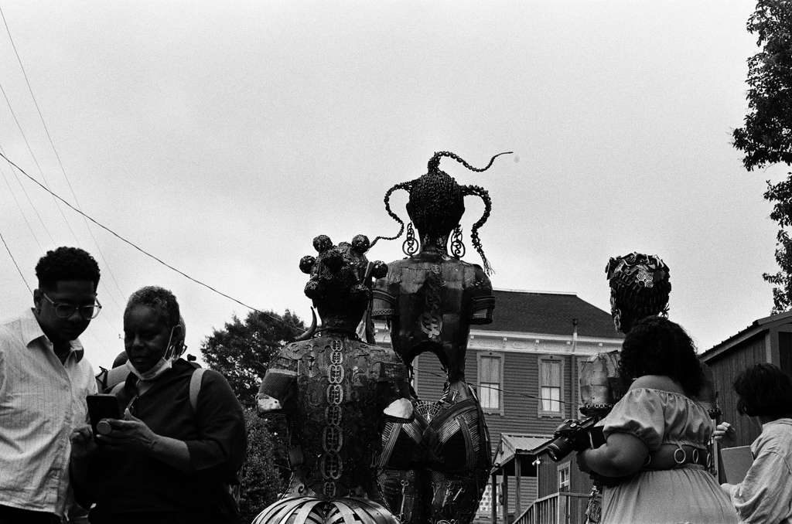
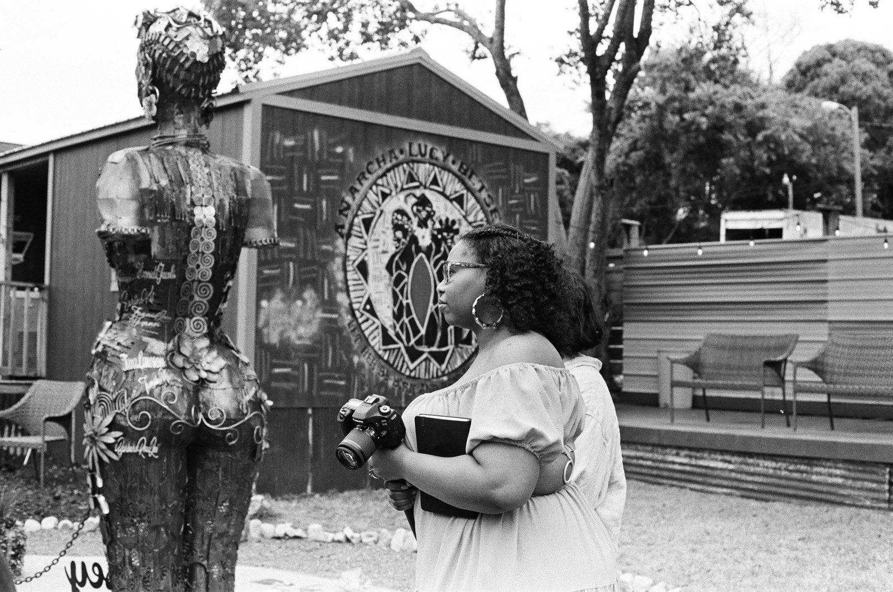
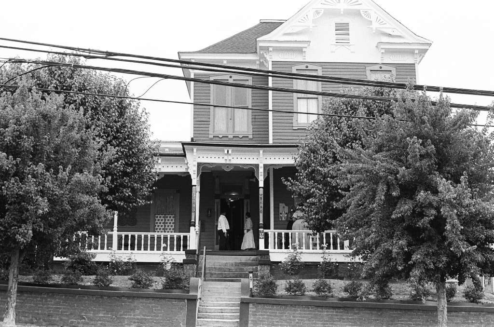

Listening Across
On 19 October 2026, clinicians, anthropologists, musicologists and community researchers gathered in Southampton and online to ask whether, when and how Endarkened Co-Composition could work in clinical research.
What came out of the day belongs to everyone who was there. The outputs will appear here once the people who made them have shaped and approved them.
Three ways of telling

The opera
An experimental opera with librettist Deborah D.E.E.P. Mouton. One lane imagines Anarcha’s life after “cured”; the other is composed with communities living with Black maternal and infant death now.

The film
A documentary of the process with DW McCrary of Unmoved Studios, following the work from archive to retreat to rehearsal room.

The archive
Fieldwork at the New York Academy of Medicine and the Arthur H. Aufses, Jr. MD Archives at Mount Sinai Hospital in New York City, sound-walking in Montgomery, Alabama, and the photographs, recordings and notes gathered along the way.
Photographs: DW McCrary / Unmoved Studios
Endarkened Co-Composition
Listening is not extraction. It happens with, not at, or to.
Endarkened Co-Composition is a collaborative, non-linear sound and storytelling methodology. It treats voices, field sounds, silences and shared experience as knowledge rather than as data to be extracted, and holds opacity and refusal as rights.
It comes from Black and Indigenous storytelling epistemologies, through Cynthia Dillard’s and S. R. Toliver’s work on endarkened knowing.
More on the method